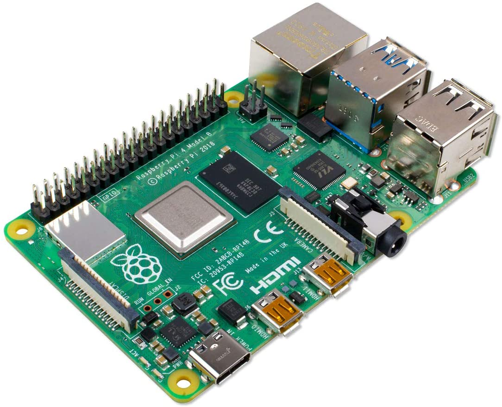
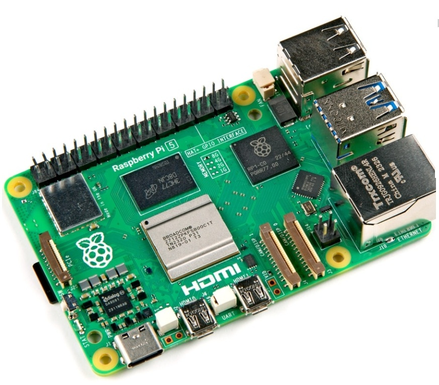

|
<< Click to Display Table of Contents >> Navigation: RigPi Introduction > |
Welcome to RigPi Station Server!
RigPi Station Server (RSS) is an easy-to-use multi-operator, multi-radio (MOMR) amateur radio control, logging, CW keying, spot management and call lookup system.
 |
 |
Raspberry Pi 4B |
Raspberry Pi 5 |
RSS is based on a Raspberry Pi computer running Linux plus an optional RigPi CW Keyer. RigPi Keyer uses the popular K1EL WinKeyer chip for keyboard or paddle input. RigPi Audio comes from the RigPi SDR feature.
The RigPi 5 image runs on any Rasperry Pi 4B+ to 5 (5 is strongly recommended). The Raspberry Pi is a small computer providing processing, 2-16 GB RAM, four USB ports, Ethernet port, Wi-Fi and LTE Bluetooth. The optional RigPi Keyer and RigPi Audio boards are connected through Raspberry Pi GPIO connectors.
Older RigPi's produced by MFJ may be available on secondary markets such as QRZ.com and eBay. Make sure a candidate RigPi is using a Raspberry Pi 4B+. Even the 4B+ is underpowered for RigPi 5.
The RSS user interface is browser based. Radio control is through a browser, no other apps are required for control or audio. It can be used with any Internet browser including those on Windows, Mac, Chromebook, Android, iOS and Linux computers, laptops, and phones. You can open RSS web pages on several devices at once. Because RSS is multi-radio, one browser can control one radio and a second browser can control the same or a different radio.
Many Windows logging programs can control RigPi using a free Windows program called RigPi Hub.
One RigPi can connect to a second RigPi through the Internet. The second RigPi is ideal for portable use.
RSS radio control uses Hamlib, a library of over 200 radio models and 30 rotors. As new radios and rotors are added you can update the Hamlib library to keep current.
Other programs are provided with RSS for ham radio and general use. Fldigi and WSJT-X provide a wide range of digital modes. TQSL prepares and uploads log files to ARRL LoTW. Additional software can be added to replace programs on a desktop PC, including an email client, and Office software including word processing, paint, spreadsheet, and database programs. You can even play games on RSS!
RSS uses open source HTML5, Python, PHP8, Javascript, jQuery and Ajax, and MySQL (MariaDB). The Tuner graphics panels: frequency; LED display; and tuning knob, were created using proprietary tools and are provided as closed source under a distribution license. RSS uses Twitter Bootstrap to create responsive web pages. You can easily view and modify RSS programs to make changes or add your own features. No specialized software coding tools are required.
Remote or Local?
When RigPi is used for remote operations, there is a question of which is the remote and which is the local site. RigPi uses the convention that the transmitter (home) site is local and the operator site is remote.